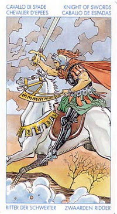

Принц Мечей (Рыцарь)
Всадник.
Прямое положение: храбрость, компетентность, зашита, ловкость, враждебность, ярость, война, уничтожение, противостояние, сопротивление, разрушение.
Значение: Карта символизирует, как правило, молодого человека, находящегося в начале своей карьеры: он хочет показать себе и другим, на что способен. В личном плане это может быть человек, не умеющий приспосабливаться к партнеру и предпочитающий идти на обострение отношений.
Часто это– «шахматист», рассматривающий любую ситуацию лишь как возможность переиграть противника.
В прямом положении эта карта всегда указывает на высокий интеллектуальный потенциал, который может быть использован и в «мирных» целях.
Данная карта может предполагать какие-то радикальные перемены в установившемся образе жизни, в нарушении ее привычного течения: у вас могут появиться новые друзья, не исключено, что перед вами откроется совершенно новая жизнь.
Рыцарь Мечей часто предвещает ссору, разрыв отношений, яростную полемику и тщательно спланированную подлость.
Довольно порывистая личность, которая яростно бросается вперед, не размышляя, часто без особых причин, но с большой отвагой и желанием что-либо совершить. Этим он зачастую осложняет жизнь себе и окружающим. Он заводит нервные дискуссии, хватается за проекты, не имея материальных ресурсов, не заботясь о чувствах тех, кто работает вместе с ним.
Если эта карта описывает твоего партнера, не стоит с ним носиться и нянчиться. Если она указывает на тебя, попытайся осознанно отнестись к переполняющей тебя энергии. Не вреди сам себе.
Это энергичный и ловкий человек, лишенный, однако, тех качеств, которые позволили бы ему стать лидером. Часто это герой-одиночка. Он сметлив, но его уму не хватает широты, которая свойственна королю мечей.
В лучшем случае этот человек просто, как бы мы сказали, «без царя в голове».
Никогда не скрывают своих эмоций, а частенько даже «выпячивают» их: желание покрасоваться - одно из самых сильных чувств в их арсенале.
Поэтому, прежде чем вы решитесь вступить с этим человеком в более близкие отношения, не грех было бы задуматься вот о чем: переделать Рыцаря Мечей в соответствии со своими вкусами вам не удастся. Такие люди, как правило, очень довольны собой и совершенно не жаждут меняться в угоду другим.
Постоянно терпеть рядом с собой Рыцаря Мечей могут лишь очень немногие!
Человек с задатками лидера,умеет располагать к себе людей, но ради своей цели пойдет по их головам. Всегда действует только в своих интересах.Хитрый,смелый, в любви очень ревнив и всегда будет вмешиваться во все дела свого избранника. Дружба с таким человеком также опасна,как и вражда.
Конфликты,разрушения. Военный.
Перевернутая, может означать «горе от ума», дурное предзнаменование.
В перевернутом положении Принц Мечей может представлять тип агрессивного и деструктивного человека, однако он также может указывать на человека, находящегося в плену заблуждений , с навязчивыми идеями, которые он сам же в себе и взлелеял. Эта карта также может указывать на человека, которому нельзя доверять, например, на мошенника, или же просто на кого-то, кто злоупотребляет доверием; либо на деньги, которые вы им доверили. В перевернутом положении эта карта также может указывать на крушение планов, связанных с какой-то поездкой.
Человек с криминальными наклонностями.
В раскладе может служить указателем того, что вы находитесь только в стадии начинания, о результатах которого судить пока еще рано - время покажет.
Отрицательное толкование: сумасбродство, тщеславие, глупость. Опасный враг, жестокость к людям и животным. Неприятности любого рода.